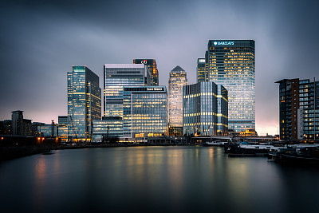
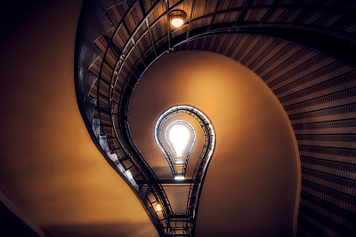
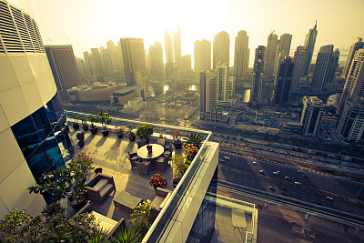
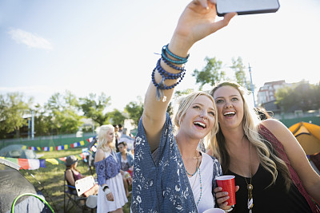
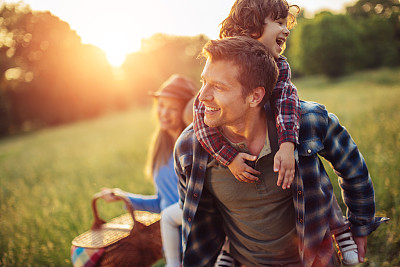

文章分享
人物摄影
绝大多数人像照片都是在与眼睛平行的高度拍摄，换一个角度往往能完全改变一张照片的表现力，主灯光的照射角度宜稍高与稍侧， 使脸上产生投影，就能使脸形显得瘦一些。所以很多摄影老手都会告诉你：不妨站在你能达到的最高点...
风景摄影
在风景区创作，优势与难度都是显而易见的。好的一面：空气品质好，光线通透且方向感强，拍出来的照片清澈明亮。蓝天白云的机会多， 不像在城市里，取景框里几乎不敢出现天空。在逆光拍摄时，对脸部的补光应该稍弱于背景光...
高级摄影
在光线处理上，不同角度的光线会带来不同的效果。顺光拍摄：画面明亮，色彩还原充分，容易拍出柔美的画面，缺点是人、景的立体感较差。 值得注意的是，顺光拍摄要避开过强的阳光，否则模特的眼睛会因为强光而无法睁开...
佳图赏析




